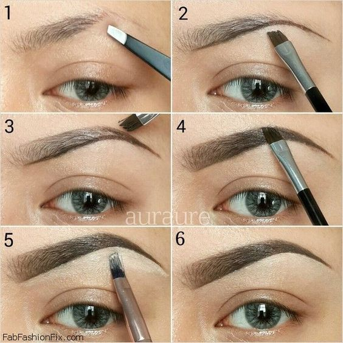

¡Hola amantes del maquillaje! 💄
Las cejas bien maquilladas pueden realzar y definir tu mirada, brindando un marco perfecto para resaltar la belleza de tus ojos. ¡Descubre cómo lograr unas cejas impecables! 👁️💖
Paso 1: Conoce tu Forma de Cejas 🌈
Antes de comenzar, identifica la forma natural de tus cejas. Pueden ser arqueadas, rectas, finas o gruesas. Conocer la forma de tus cejas te ayudará a maquillarlas de manera más precisa y favorecedora. 📏
Paso 2: Cejas Bien Cuidadas 🌟
Mantén tus cejas bien cuidadas. Retira los vellos no deseados para dar forma a tus cejas. Puedes usar pinzas o cera, o visitar a un profesional para un diseño más preciso. ¡Cejas bien definidas son la clave! ✂️
Paso 3: Rellena con Precisión ✍️
Usa un lápiz o sombra de cejas para rellenar suavemente los espacios dispersos. Realiza trazos cortos y sigue la dirección del crecimiento del vello para un aspecto más natural. 👌
Paso 4: Define el Arco y la Cola 🏹
Define el arco de tus cejas para resaltar la expresión. Asegúrate de que la cola de la ceja esté bien definida sin ser demasiado pronunciada. Un arco bien colocado puede elevar toda tu expresión facial. 🌟
Paso 5: Fija con Gel de Cejas 🌈
Para mantener tus cejas en su lugar durante todo el dÃa, aplica un gel de cejas transparente. Esto dará un toque final y asegurará que tus cejas se vean impecables. 🌟
Paso 6: Cejas Naturales y Elegantes 💖
Recuerda que menos es más. Opta por un aspecto natural y elegante. No exageres con el producto y asegúrate de que tus cejas complementen tu rostro en lugar de robar la atención. ¡Listas para deslumbrar! 💖
¡Y ahà lo tienes, chicas! Ahora sabes cómo maquillar tus cejas para obtener un marco perfecto que realce tu belleza natural. ¡Que tus cejas destaquen tu mirada con estilo! 👁️💖